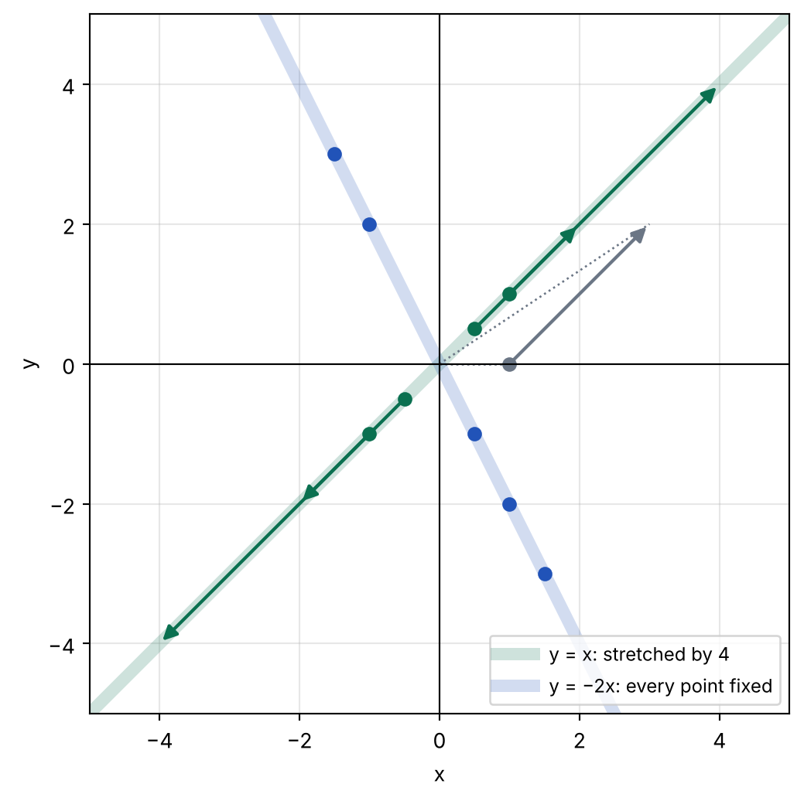

Show the code for this figure
import numpy as np
import matplotlib.pyplot as plt
A = np.array([[3, 1], [2, 2]])
green, blue, grey = "#0a7050", "#2153b8", "#6b7685"
fig, ax = plt.subplots(figsize=(5.5, 5.5))
t = np.array([-8, 8])
ax.plot(t, t, color=green, lw=6, alpha=0.2, label="y = x: stretched by 4")
ax.plot(t, -2 * t, color=blue, lw=6, alpha=0.2, label="y = −2x: every point fixed")
def move(p, colour):
q = A @ p
ax.plot(*p, "o", color=colour, ms=6)
if np.allclose(p, q):
return
ax.annotate("", xy=q, xytext=p,
arrowprops=dict(arrowstyle="-|>", color=colour, lw=1.6, mutation_scale=14))
for p in ([0.5, 0.5], [1, 1], [-0.5, -0.5], [-1, -1]):
move(np.array(p), green)
for p in ([1, -2], [-1, 2], [1.5, -3], [-1.5, 3], [0.5, -1]):
move(np.array(p), blue)
move(np.array([1, 0]), grey)
ax.plot([0, 1], [0, 0], color=grey, lw=1, ls=":")
ax.plot([0, 3], [0, 2], color=grey, lw=1, ls=":")
ax.axhline(0, color="black", lw=0.8); ax.axvline(0, color="black", lw=0.8)
ax.set_xlim(-5, 5); ax.set_ylim(-5, 5); ax.set_aspect("equal")
ax.set_xticks(range(-4, 5, 2)); ax.set_yticks(range(-4, 5, 2))
ax.grid(alpha=0.3); ax.set_xlabel("x"); ax.set_ylabel("y")
ax.legend(loc="lower right", fontsize=9)
plt.tight_layout()
plt.show()